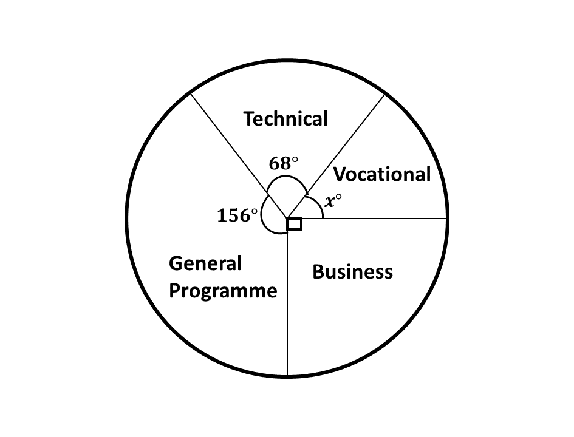
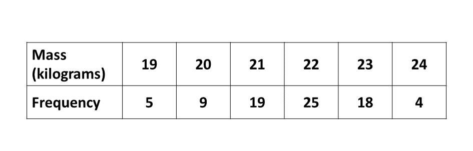

GUIDE (BECE - 1998)
Try to solve each question within 15 minutes. Time yourself and see how well you can do. After you are done solving the section B, try the timed section A, multiple choice questions at the bottom of the page.
Good luck and remember to check your answers with the solutions provided. If you have any questions, feel free to ask your teacher or refer to the video lessons for more help.
Section B
Question 1
-
Simplify the expression
\(3x^2 + 6xy - 3y^2 + 4x^2 - 8xy + 2y^2\) -
\((i)\) Solve the inequality \(3x - 9 \geq 12(x - 3)\).
\((ii)\) Illustrate your answer on the number line. -
If \(p = 7, a = 16, b = 4\) and \(c = 3\),
evaluate \(p^2 - \dfrac{(a - b)}{c}\)
Question 1.a.
\(3x^2 + 6xy - 3y^2 + 4x^2 - 8xy + 2y^2\)
Grouping like-terms:
\(3x^2 + 4x^2 + 6xy - 8xy - 3y^2 + 2y^2\)
\(\Rightarrow 7x^2 - 2xy - y^2\)
Question 1.b.i.
\(3x - 9 \geq 12(x - 3)\)
\(\Rightarrow 3x - 9 \geq 12x - 36\)
Grouping like-terms:
\(\Rightarrow 3x - 12x \geq -36 + 9\)
\(\Rightarrow \hspace{0.7cm} - 9x \geq - 27\)
\(\Rightarrow \hspace{0.5cm} \dfrac{- 9x}{-9} \leq \dfrac{- 27}{-9}\)
\(\Rightarrow \hspace{1.1cm} x \leq 3\)
\(\therefore \underline{\{x:x \leq 3\}}\)
Question 1.b.ii.
Illutrating on the number line:
Solution
\(p = 7\)
\(a = 16\)
\(b = 4\)
\(c = 3\)
\(p^2 - \dfrac{(a - b)}{c}\)
\(\Rightarrow 7^2 - \dfrac{(16 - 4)}{3}\)
\(\Rightarrow 49 - \dfrac{(12)}{3}\)
\(\Rightarrow 49 - 4\)
\(\Rightarrow 45\)
\(\therefore\) \(\underline{p^2 - \frac{(a - b)}{c} \ \text{is} \ 45}\)
Question 2
-
Using a pair of compasses only;
\((i)\) Construct a triangle \(PQR\) such that \(|PQ| = 8\) cm, \(\angle RPQ = 90^\circ\) and \(\angle PQR = 30^\circ\). Measure \(|RQ|\)
\((ii)\) Construct the perpendicular bisector (mediator) of \(RQ\). Let it meet \(RQ\) at \(O\).
-
With \(O\) as center and radius \(OP\), draw a circle. Measure \(|OP|\).
-
What is the special name for the chord \(RQ\)?
Solution
Question 3
-
A farmer travelled from Bakwa to Pabam, the distance between the two towns is 51 km. At Pabam he covered an additional 40 km on official duties. He returned to Bakwa the next day.
\((i)\) Find the total distance covered by the man.
\((ii)\) If the car used one litre of petrol to cover 20 km, find the amount of petrol used for the whole journey.
\((iii)\) If a litre of petrol cost ₵522.00, calculate the total cost of petrol used for the journey.
-
A woman sold an article for ₵200,000.00 and made a profit of 25%. Find the cost price of the article.
Solution
Solution
Question 4
-
The pie chart shows angles representing the number of candidates who applied for admission into four programmes at a Senior Secondary School. The number of pupils who applied were 1080. Find
\((i)\) the angle \(x^\circ\) representing the Vocational Programme.
\((ii)\) the number of candidates who applied for Business Programme.
\((iii)\) correct to the nearest whole number, the percentage of the number of applicants who applied for General Programme.
 -
The table below shows the distribution of the masses of pupils in a school. On a graph paper, draw a bar chart for the distribution.

Solution
Solution
Question 5
-
Using a scale of 2 cm to 2 units on both axes, draw two perpendicular axes \(OX\) and \(OY\) on a graph sheet. On the same sheet, mark the \(x-\)axis from \(-8\) to \(8\) and the \(y-\)axis from \(-8\) to \(8\).
\((i)\) Plot \(P(-2, 3)\) and \(Q(6, 4)\). Join \(PQ\).
\((ii)\) Draw the image \(P_1Q_1\) of \(PQ\) under the anticlockwise rotation through \(90^\circ\) about the origin where \(P \rightarrow P_1\) and \(Q \rightarrow Q_1\)
\((iii)\) Draw the image \(P_2Q_2\) of \(PQ\) under a clockwise rotation through \(90^\circ\) about the origin where \(P \rightarrow P_2\) and \(Q \rightarrow Q_2\).
-
The base radius of a closed cylinder is 4 cm and height of 7 cm. Calculate the total surface area.
[Take \(\pi = \frac{22}{7}\)]
Solution
Solution
Test Guide
This timed test consists of 40 multiple-choice questions to be completed in 60 minutes. Read each question carefully and select the best answer.
After completing the test, your answers will be automatically submitted. You can review your performance and see correct answers afterward.
BECE 1998 Mathematics (Timed - 60 minutes)
You have 60 minutes to complete this test. The timer will start when you begin.